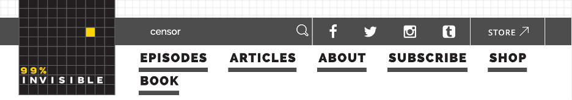
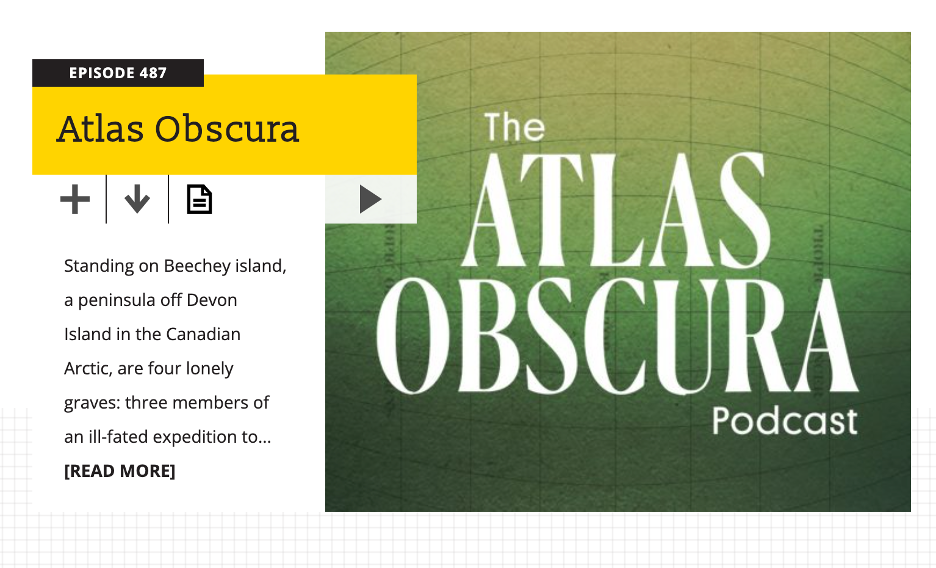
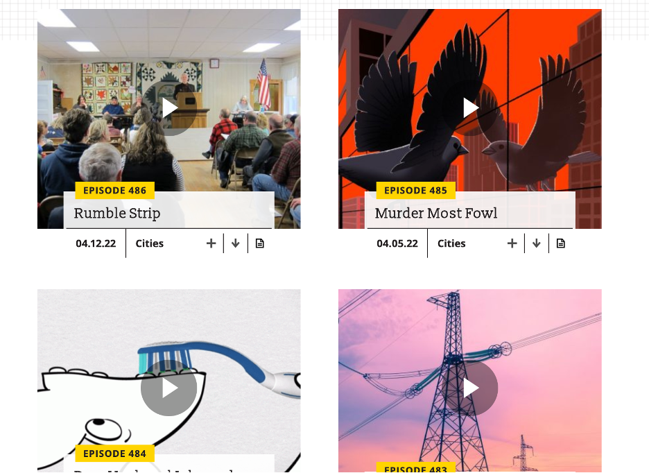

Website Analysis
Website: 99percentinvisible.org
On the homepage of the website, the logo of the podcast is located at the top left of the page. It has six navigation links: Episodes, Articles, About, Subscribe, Shop, Book. Two of the navigation links (About and Subscribe), have arrows that shows a dropdown list when you hover over it. Above the main header, there is a section that has a search bar, and links to four social media accounts belonging to the podcast, shown as icons. When the page is loaded, a popup section appears with information about website cookies, with a link to review the website cookie policy. When the link is clicked, it takes you to a page titled “Privacy Policy” which gives information about their terms of use. When the page is first loaded, right below the header section, there is a section for the user to input their email address to signup for newsletters from the podcast. This section can be closed using the 'x' symbol on the page. However, there is no way to open it back up once it has been closed.
Main Section
The main section starts off with a horizontal column that displays the most recent podcast episode. It has a clickable image which takes you to a page that shows information about that episode. There is a play button that can be seen above. This button allows users to listen to the podcast episode when clicked through an audio player that is attached to the bottom of the screen. In the image above, you can also see a “READ MORE” text link that leads to the same page that is linked to the picture for the podcast.
Below this section, there are 12 of the latest podcast episodes released before the most recent podcast, arranged in descending order. On a smaller screen, these episodes are arranged in a single column, but on a screen from a tablet size upwards, it is arranged in a double column with six rows. Refer to image below. They podcast episodes appear as images with titles and a play button for the episode, a button to download, a button to add the episode to a queue for the audio player, and a button to see the transcript of the episode. There is also text to display what topic the episode focuses on. There are eight topics which include: Architecture, Infrastructure, Cities, Objects, Sounds, Visuals, Technology, and History.These topics can be seen in a side section, below an advertisement section on wider screens, and at the end of the episode section on smaller sections.
